第 3 章 MATLAB 编程：函数、向量、数组与傅里叶变换#
本章解决：把傅里叶变换的离散约定落实为可复用的程序结构——函数文件与坐标向量的组织、FFT 前的移位顺序与幅值定标、频谱的显示方式，以及基于 FFT 的一维、二维卷积实现。学完能独立编写 rect、circ 等基本函数，并用统一的坐标与定标流程完成变换、卷积与结果核对。
3.0 本章导图#
3.1 定义函数#
打开 MATLAB，常用窗口有：Current Directory（当前文件夹，你的文件存这里）、Command Window（命令窗口，逐行执行、显示数值输出）、Command History（历史命令），它们通常组成了 MATLAB 桌面（Desktop）；另一个重要窗口是 Editor Window（编辑器），代码在这里输入并保存成文件——M 文件（扩展名 .m）。
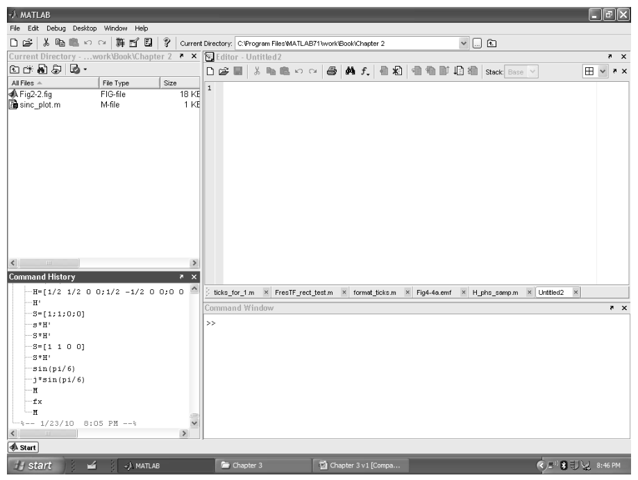
M 文件分两种：**脚本（script）**是一组按顺序执行的代码行；函数（function） M 文件可以被命令窗口或其他脚本调用，完成特定任务并返回结果。原书的建议工作流：先在 Current Directory 工具栏点"New Folder"建一个工作文件夹（比如 Fourier Optics），双击进入，之后所有 M 文件都存这里、互相可见。
第一个程序：写一个矩形（rect）函数。在编辑器里逐行输入（原书逐行讲了这个文件的每个细节）：
逐行拆解：
%后面是注释（编辑器显示绿色），不参与执行；也可以写在代码行尾。蓝色文字表示内置函数。function命令把这个 M 文件声明为名为rect的函数，输入向量x、输出向量out。保存时文件名要与函数名一致（rect.m），之后同文件夹里的任何脚本都能调用它。- 第 4 行是向量化逻辑测试（vectorized logical test）：
abs对每个元素取绝对值，<=对每个元素做比较——真返回 1、假返回 0，输出out与x等长。MATLAB 的强项就是向量/矩阵运算，所以代码天然以数组为变量，而不是逐个元素循环。 - 行尾分号抑制该行结果在命令窗口的回显。
关键约定：边界样本不取半值。解析的 rect 定义（表 1.2）在 \(|x|=1/2\) 处取 \(1/2\)；这里编码成 abs(x)<=1/2，边界样本取 1。作者的理由：把半值样本想象成边缘上的"斜坡"，不如干脆的单点跳变干净。这个选择带来一个全书通用的特性：
rect 的全宽总由奇数个样本组成。如果某天请求"偶数个样本宽"的矩形，返回值会比预期多一个样本。所以原书例子常故意用 0.055 这种"非整"半宽——全宽 0.11 m 在 \(\Delta x=0.01\) m 下正好 11 个样本。
约定差异（非笔误，但要记住）：书的 rect 编码 vs 表 1.2 解析定义
表 1.2 的解析定义在边界取半值 \(1/2\)（第 1、2 章笔记代码里的 rectn/base.rect 都照此实现）；本章起书内所有 MATLAB 代码的 rect 都是 abs(x)<=1/2（边界取 1）。两者只在"恰好命中边界的样本"上不同——均匀网格很少命中，所以大多数时候你察觉不到；但 3.7 节会看到它把二维频谱的峰值顶高 15%（这是"奇数样本"特性的直接后果）。本笔记 Python 侧约定：表 1.2 语义用公共模块的 base.rect，书编码语义用本章脚本里的 rect_book。
拓展：logical/bool 数组为什么能当函数值用
abs(x)<=1/2 的返回值不是数值数组而是 logical 数组（numpy 里是 bool 数组）——但在算术里它就是 0/1：乘法、求和都会自动按数值处理。这一个事实顶三行循环代码：C 语言式的 for 循环加 if 判断，在这里一行搞定，而且对任意形状的数组（二维 X、Y 网格）同样成立。第 3.7 节的二维圆盘、第 5 章起的光瞳函数全都靠这一招生成。顺带一个坑：MATLAB 旧版本里 find 是把 logical 变索引的常用工具；numpy 里对应的写法是布尔掩码直接索引 x[mask]。
存盘、关编辑器，rect 就可以在 Fourier Optics 文件夹里的任何脚本中调用了。
function out = rect(x)
% ===== 书 3.1 节：矩形函数 M 文件（逐行忠实 + 中文注释） =====
% 书 3.1 节在 Editor Window 里建立的第一个函数 M 文件（原书第 1-5 行）：
% 1 function[out]=rect(x);
% 2 % rectangle function
% 3
% 4 out=abs(x)<=1/2;
% 5 end
% 要点（书 3.1 节原话）：
% - "%" 后面是注释（编辑器显示绿色）；行尾分号抑制命令行回显；
% - 第 4 行是"向量化逻辑测试"：abs 对每个元素取绝对值，"<=" 对每个元素
% 做比较，真 -> 1、假 -> 0，输出 out 与输入 x 等长；
% - 边界样本【不】取表 1.2 解析定义的半值 1/2：作者认为半值像"斜坡"，
% 不如单点跳变干净，所以编码成 abs(x)<=1/2（边界取 1）；
% - 由此带来的特性：矩形全宽总是由【奇数】个样本组成；若请求"偶数个
% 样本宽"，会多返回一个样本——全书例子故意用 0.055 这类非整半宽配合。
% MATLAB/Python 差异：abs(x)<=1/2 返回 logical 数组，算术运算时按 0/1 处理；
% numpy 比较返回 bool 数组，行为相同（乘法/求和时同样当 0/1）。
out = abs(x) <= 1/2;
end
# python/fourier/ch3/ch3_fft_example.py 内的定义（书 3.1 节语义）
def rect_book(x):
"""书 3.1 节的 rect 编码：abs(x) <= 1/2 -> 1（边界取 1，不取半值）。
表 1.2 的解析定义（base.rect）在边界取半值 1/2；两者只在恰好命中
边界的样本上不同。书 3.1 节原话：半值会被解读成"斜坡"，不如单点
跳变；代价是矩形全宽总由奇数个样本组成（请求偶数宽会多给一个样本），
所以全书例子故意用 0.055 这类非整半宽。
"""
return (np.abs(x) <= 0.5).astype(float)
3.2 创建向量#
任务：采样一个一维矩形函数——半宽 \(w = 0.055\) m（全宽 0.11 m），放进边长 \(L = 2\) m、样本数 \(M = 200\) 的向量里，采样间隔 \(\Delta x = L/M = 0.01\) m。新建一个编辑器窗口，输入参数四件套：
% fft_example - Chapter 3 fft example
w=0.055; %rectangle half-width (m)
L=2; %vector side length (m)
M=200; %number of samples
dx=L/M; %sample interval (m)
再加坐标向量与信号向量：
-L/2:dx:L/2-dx 就是式 (2.21)：从 \(-1\) 到 \(0.99\)、步长 0.01，右端点 \(+L/2\) 取不到，正好 200 个样本。x/(2*w) 里 2*w 是标量，逐元素相除后整根向量喂给 rect——代码长得跟解析式一样。
画图看一眼：
figure(1) 打开（或切到）1 号图窗，plot 画 \(f\) 对 \(x\)。脚本要先存盘（别用带空格的文件名）再点 Run 运行；代码有错时命令窗口会报信息。
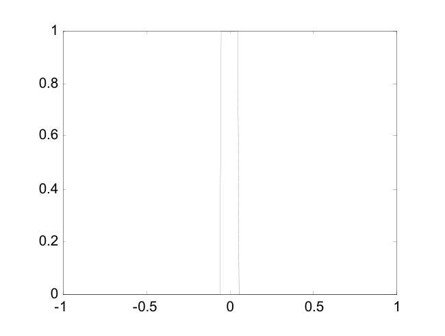
图形窗口顶部的"Edit Plot"箭头可以交互式改外观，但改动不写回代码——下次运行就打回原形。要持久生效，把修饰命令写进脚本、放在 plot 之后：
'-o' 在每个样本处画圆圈标记；axis([...]) 设定横纵轴范围；xlabel 给横轴加标签。figure(2) 开新窗口——没有它，新图会覆盖 1 号窗里的旧图。
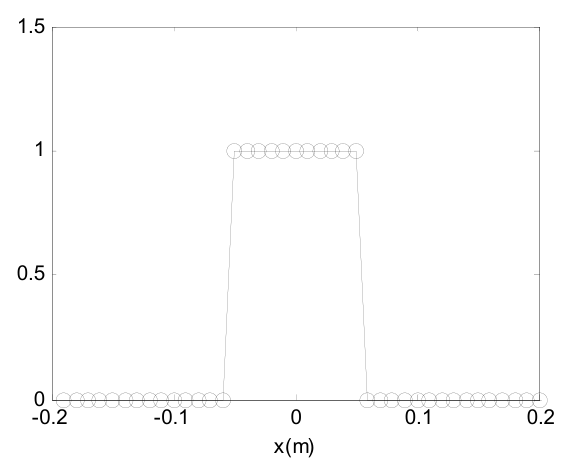
读图 3.3 有一道数样本的小题：矩形平台（值为 1 的样本）从 \(x=-0.05\) 到 \(+0.05\) 共 11 个样本，但 11 个样本之间只有 10 个间隔，所以"顶宽"是 0.1 m；把两侧斜线算到底则是 13 个样本、0.12 m。这份数字表示的正确宽度是 0.11 m，介于两个量测之间。又因为 rect 编码总给出奇数个样本：若把半宽改成 0.05 m，得到的信号向量一模一样——设计宽度与数字表示之间会有小偏差，这是原书用非整半宽（0.055）的原因。
3.3 为 FFT 移位#
暂时忘掉坐标向量 \(x\)，只看 200 个样本：这是宽 11 个样本、居中摆放的矩形。把 plot 的 \(x\) 参数去掉、对索引画图就能看到：
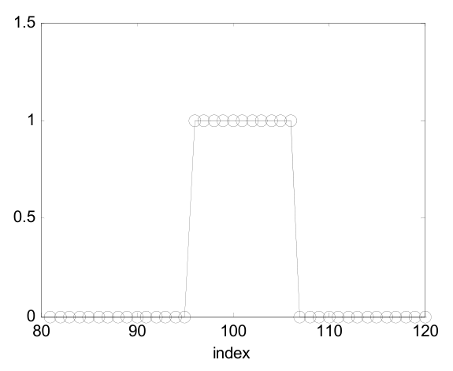
中心样本在 index 101 = \(M/2+1\)（1-based）——这正是第 2 章"居中排列"的位置。居中方便观看，但 FFT 算法要求零坐标样本在第一个索引位置（2.4 节的"移位排列"）。fftshift 把向量前一半与后一半对调，完成这件事：
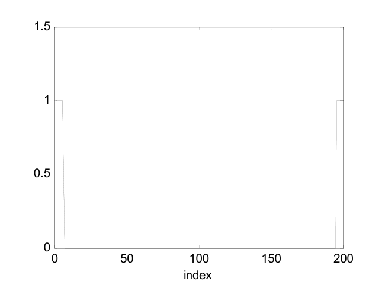
细看图 3.5：中心样本在 index 1，5 个样本在"右"（index 2–6），其余 5 个在"左"——挂到了向量末尾（index 197–200）。
原书给了两条关于移位的评论：
- 偶数个样本最省心：把目标函数居中在 \(M/2+1\)，
fftshift一次就把它送到 index 1。奇数个样本要小心——用了fftshift之后就该用ifftshift来撤销；偶数时fftshift正反两用都行（这正是第 2 章坑与陷阱的第 2 条：偶数 \(N\) 下两者等价，奇数 \(N\) 下不同）。 - 不移位的代价：FFT 会对一个"平移了零位置"的函数做变换，结果里多出一项线性相位（位移定理！）——幅度看不出来，相位全错。
细节：书里用 fftshift 做 FFT 前移位
严格的配对是"居中 → ifftshift → fft → fftshift"（第 2 章的口诀）。书里预移位写的是 fftshift——在全书默认的偶数 \(M\) 下两者是同一个操作，没有错；但把书代码改成奇数网格时要记得换成 ifftshift。本章 Python 脚本按严格配对书写，MATLAB 脚本保留书写的 fftshift 并加注释。
3.4 计算 FFT 并显示结果#
对移位后的向量做 FFT，并乘 \(\Delta x\) 定标回连续量纲：
F0=fft(f0)*dx; %FFT and scale
figure(5)
plot(abs(F0)); %plot magnitude
title('magnitude');
xlabel('index');
figure(6)
plot(angle(F0)); %plot phase
title('phase');
xlabel('index');
约定：频域向量用大写字母。乘 \(\Delta x\) 是近似连续傅里叶变换积分的必要步骤（式 (2.19) 的黎曼和因子；忘了它，整个频谱就小 \(M\) 倍）。每个复数样本装着两份信息——实部/虚部，或等价地幅度/相位——所以 customary 用两张图展示：abs 取幅度，angle 取相位（输出范围 \(-\pi\) 到 \(\pi\)）。
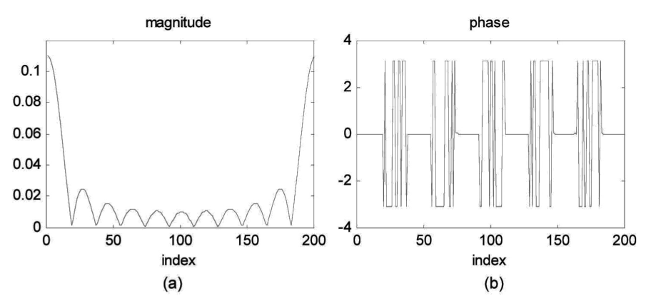
怎么读这两张图（原书讲得很细，值得复述）：
- 幅度：sinc 形一目了然，峰在 index 1（移位排列下 index 1 = 零频率）。注意样本没有正好落在 sinc 的"零点"上，所以图里的谷底并不真的到零（为什么，见下面的拓展框）。
- 相位：看起来花，其实只有三个值：0、\(-\pi\)、\(\pi\)。而 \(-\pi\) 与 \(\pi\) 在 mod \(2\pi\) 意义下是同一个值——图里 ±π 之间的陡峭跳变只是样本间微小数值差异造成的显示伪影，跳变两侧的相位实际上是常数。真正重要的跳变是 0 与 ±π 之间，大约每 18 个点发生一次；对照幅度图，它恰好发生在幅度零点处。
- 相位 \(\pi\) 等价于给幅度加一个负号。把这些信息合起来：图 3.6 表示的是一个实值 sinc 函数——主瓣为正、第一瓣为负、第二瓣为正，依此类推。这个例子本可以只画一张图；但一般而言傅里叶变换结果是复数，幅度+相位的两张图是通用做法。
为了显示，再把结果居中，并建立频率坐标：
F=fftshift(F0); %center F
fx=-1/(2*dx):1/L:1/(2*dx)-(1/L); %freq cords
figure(7)
plot(fx,abs(F)); %plot magnitude
title('magnitude');
figure(8)
plot(fx,angle(F)); %plot phase
title('phase');
xlabel('fx (cyc/m)');
频率坐标 fx 按式 (2.22) 建立：\(-50 : 0.5 : 49.5\) cyc/m。运行后得到居中的幅度与相位图（图 3.7）。
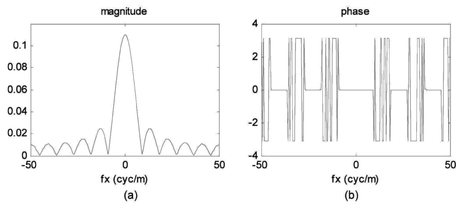
拓展：'约每 18 个点'和'谷底不为零'是同一件事
sinc 的零点在 \(f_X = k/(2w) = k/0.11 \approx 9.09k\) cyc/m；而频率网格的样本间隔是 \(\Delta f = 1/L = 0.5\) cyc/m。两套刻度不可公度：\(9.09/0.5 = 18.18\) 不是整数——所以相邻零点间隔"约每 18 个样本"（原话），且样本永远不会正好踩在零点上，谷底自然不为零。想让样本踩准零点，需要 \(L/(2w)\) 恰为整数（比如 \(w = 0.05\)、\(L = 2\) 时正好 20）。这也是第 2 章"周期延拓/采样对不上解析世界"的一个小切口：离散网格只是解析曲线的一组不重合的探针。
3.5 与解析结果比较#
好习惯：新代码先用解析可查的简单输入试刀——既帮诊断问题，也让你带着信心往上垒代码。本例的解析结果现成：
（表 1.3 第一行取 \(a = 2w\)；矩形面积 \(2w\) 就是频谱峰值——中心纵坐标定理。）把解析谱在同样的频率网格上采样，与 FFT 结果同图对比：
F_an=2*w*sinc(2*w*fx); %analytic result
figure(9)
plot(fx,abs(F),fx,abs(F_an),':'); %plot magnitude
title('magnitude')
legend('discrete','analytic')
xlabel('fx (cyc/m)')
figure(10)
plot(fx,angle(F),fx,angle(F_an),':'); %plot phase
title('phase')
legend('discrete','analytic')
xlabel('fx (cyc/m)')
原书用 MATLAB 内置 sinc——它与表 1.2 的定义一致（sin(pi*u)/(pi*u)；numpy 的 np.sinc 同定义，但它是基础 MATLAB 没有的信号处理工具箱函数，本笔记脚本自带 sincn 局部函数以免依赖）。
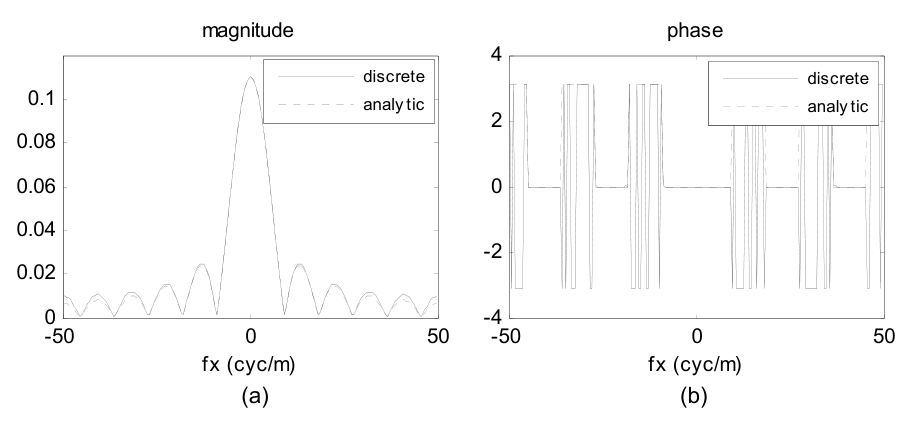
结论（图 3.8）：幅度几乎重合，FFT 在边缘处略高于解析曲线——这是 FFT 的周期延拓性质（2.5 节）带来的混叠；相位只差一些 ±π 之间的跳变，无关紧要。
到这里，书中的 fft_example 脚本就完工了。下面把 3.2–3.5 节的代码合并成完整脚本（与仓库文件一致），附数值检查：
% ===== 书 3.2-3.5 节：fft_example 脚本（建向量 -> 移位 -> FFT 定标 -> 解析对比） =====
% 书把这几节写成一个逐步加长的脚本 fft_example.m（原书第 1-58 行），本文件
% 按同样的参数与步骤合并复现书图 3.2-3.8，并附数值检查。
% 参数（书 3.2 节）：矩形半宽 w = 0.055 m（全宽 0.11 m）、边长 L = 2 m、
% 样本数 M = 200 -> 采样间隔 dx = 0.01 m。
% MATLAB/Python 差异：
% - MATLAB 索引 1-based：居中排列的零坐标在 index M/2+1（本例 101）；
% Python 0-based 在 index M//2（本例 100）；
% - 书用 fftshift 做 FFT 前移位：偶数 M 时与 ifftshift 等价；奇数 M 必须
% 用 ifftshift 配对（书 3.3 节原话也这么提醒）；
% - plot 的 '-o'、axis([xmin xmax ymin ymax]) 对应 Python 的
% plt.plot(..., 'o-') 与 plt.xlim/plt.ylim。
clear; clc; close all;
% ---------- 3.2 创建向量 ----------
w = 0.055; % 矩形半宽 (m)。故意不取 0.05：见 3.1 节"奇数样本"特性
L = 2; % 向量边长 (m)
M = 200; % 样本数
dx = L/M; % 采样间隔 (m)
x = -L/2:dx:L/2-dx; % 坐标向量（式 2.21）：-1 : 0.01 : 0.99，共 200 个
f = rect(x/(2*w)); % 采样矩形：|x| <= 0.055 的样本为 1（11 个）
% rect.m 是 3.1 节建的函数（同文件夹即可调用）
fprintf('x 范围: [%.2f, %.2f]，共 %d 个样本\n', x(1), x(end), numel(x));
fprintf('f==1 的样本数 = %d（全宽 0.11 m / dx 0.01 m = 11，奇数）\n', sum(f == 1));
fprintf('坐标 x=0 的 index = %d（居中排列 M/2+1 = %d）\n', ...
find(abs(x) < 1e-12), M/2 + 1);
% ---------- 3.3 为 FFT 移位 ----------
f0 = fftshift(f); % 居中 -> 移位排列（零坐标样本挪到 index 1）
% 书图 3.5：移位后中心样本在 index 1，5 个样本在"右"（index 2..6），
% 其余 5 个在"左"——挂在向量末尾（index 197..200）。
% 不移位直接 fft 的后果：相当于对平移了 -L/2 的函数做变换，频域多出一线性
% 相位因子 exp(+j*2*pi*f*L/2)（位移定理）——幅度不变、相位全错。
% ---------- 3.4 计算 FFT 并定标 ----------
F0 = fft(f0) * dx; % FFT 并乘 dx 回连续量纲（式 2.19 + 黎曼和因子）
F = fftshift(F0); % 居中排列
fx = -1/(2*dx) : 1/L : 1/(2*dx) - 1/L; % 频率坐标（式 2.22）：-50 : 0.5 : 49.5
% ---------- 3.5 与解析结果对比 ----------
% rect(x/(2w)) 的解析频谱（表 1.3 第一行，a = 2w）：F(fx) = 2w sinc(2w fx)。
% 书用 MATLAB 内置 sinc（信号处理工具箱函数，定义与表 1.2 一致、等于
% np.sinc）；这里自带局部函数 sincn，免依赖工具箱。
F_an = 2*w*sincn(2*w*fx);
% ---------- 数值检查 ----------
[~, ic] = max(abs(F)); % 峰值（DC）位置
fprintf('DC 样本 |F(fx=0)| = %.6f（= 矩形面积 2w = %.2f，中心纵坐标定理）\n', ...
abs(F(ic)), 2*w);
in_main = abs(fx) <= 25;
fprintf(['|FFT|-|解析| 最大差异：全频带 %.4f；|fx|<=25 内 %.2e\n'], ...
max(abs(abs(F) - abs(F_an))), ...
max(abs(abs(F(in_main)) - abs(F_an(in_main)))));
fprintf(' （边缘差异 = 周期延拓带来的混叠，书 3.5 节原话"FFT 边缘略高"）\n');
fprintf('sinc 零点间隔 1/(2w) 折合样本数：L/(2w) = %.2f（书说"约每 18 个点"）\n', L/(2*w));
fprintf('峰值处相位 = %.2e（实偶函数 -> 相位只有 0 与 ±pi，±pi 同一相位 mod 2pi）\n', ...
angle(F(ic)));
% ---------- 画图：复现书图 3.3-3.8 ----------
figure('Position', [60 60 1250 680]);
subplot(2,3,1); % 书图 3.3（放大看采样矩形）
plot(x, f, '-o', 'MarkerSize', 4); axis([-0.2 0.2 0 1.5]); grid on;
xlabel('x (m)'); title('f = rect(x/(2w)) samples (Fig. 3.3)');
subplot(2,3,2); % 书图 3.4
plot(f, '-o', 'MarkerSize', 4); axis([80 120 0 1.5]); grid on;
xlabel('index'); title('vs index: center at 101 = M/2+1 (Fig. 3.4)');
subplot(2,3,3); % 书图 3.5
plot(f0, '-o', 'MarkerSize', 4); axis([0 200 0 1.5]); grid on;
xlabel('index'); title('after fftshift: center at index 1 (Fig. 3.5)');
subplot(2,3,4); % 书图 3.6(a)
plot(abs(F0)); grid on; xlabel('index');
title('|F_0| vs index (Fig. 3.6a)');
subplot(2,3,5); % 书图 3.6(b)
plot(angle(F0)); grid on; xlabel('index');
title('phase vs index: only 0 and ±\pi (Fig. 3.6b)');
subplot(2,3,6); % 书图 3.8(a)
plot(fx, abs(F), fx, abs(F_an), ':'); grid on;
xlabel('fx (cyc/m)'); title('centered |F| vs analytic (Fig. 3.8a)');
legend('discrete', 'analytic', 'FontSize', 8);
saveas(gcf, 'out_fft_example.png');
fprintf('已保存 out_fft_example.png\n');
% ---------- 局部函数 ----------
function s = sincn(u)
% 归一化 sinc：sin(pi*u)/(pi*u)，u=0 处极限 1（表 1.2；np.sinc 同定义）
s = ones(size(u));
nz = u ~= 0;
s(nz) = sin(pi*u(nz)) ./ (pi*u(nz));
end
# ===== 书 3.2-3.5 节：fft_example 脚本（建向量 -> 移位 -> FFT 定标 -> 解析对比） =====
# 书把这几节写成一个逐步加长的脚本 fft_example.m（原书第 1-58 行），本文件
# 按同样的参数与步骤复现书图 3.2-3.8，并附数值检查。
# 参数（书 3.2 节）：矩形半宽 w = 0.055 m（全宽 0.11 m）、边长 L = 2 m、
# 样本数 M = 200 -> 采样间隔 dx = 0.01 m。
# MATLAB/Python 差异：
# - numpy 索引 0-based：居中排列的零坐标在 index M//2（本例 100），
# MATLAB 是 index M/2+1（本例 101）；
# - 书用 fftshift 做 FFT 前移位（偶数 M 下与 ifftshift 等价）；本文件按
# 第 2 章的严谨配对写 ifftshift -> fft -> fftshift，奇数 M 也不出错；
# - MATLAB 的 plot '-o'、axis([...]) 对应 plt.plot(..., 'o-') 与
# plt.xlim/plt.ylim。
import os
import sys
import numpy as np
import matplotlib.pyplot as plt
sys.path.insert(0, os.path.join(os.path.dirname(os.path.abspath(__file__)), "..", "common"))
from base import rect, coords, sinc # 公共积木：表 1.2 函数与网格约定（ch2 起）
def rect_book(x):
"""书 3.1 节的 rect 编码：abs(x) <= 1/2 -> 1（边界取 1，不取半值）。
表 1.2 的解析定义（base.rect）在边界取半值 1/2；两者只在恰好命中
边界的样本上不同。书 3.1 节原话：半值会被解读成"斜坡"，不如单点
跳变；代价是矩形全宽总由奇数个样本组成（请求偶数宽会多给一个样本），
所以全书例子故意用 0.055 这类非整半宽。
"""
return (np.abs(x) <= 0.5).astype(float)
# ---------- 3.2 创建向量 ----------
w = 0.055 # 矩形半宽 (m)。故意不取 0.05：见"奇数样本"特性
L = 2.0 # 向量边长 (m)
M = 200 # 样本数
dx = L / M # 采样间隔 (m)
x, fx = coords(L, M) # 式 (2.21)/(2.22)：x ∈ [-1, 0.99]，fx ∈ [-50, 49.5]
f = rect_book(x / (2 * w)) # 采样矩形：|x| <= 0.055 的样本为 1（11 个）
print(f"x 范围: [{x[0]:.2f}, {x[-1]:.2f}]，共 {len(x)} 个样本")
print(f"f==1 的样本数 = {int(f.sum())}（全宽 0.11 m / dx 0.01 m = 11，奇数）")
print(f"坐标 x=0 的 index = {int(np.argmin(np.abs(x)))}"
f"（Python 0-based；MATLAB 是 {M // 2 + 1} = M/2+1）")
# 两种 rect 约定对照：本例网格上完全相同（边界 x=±0.055 不在网格上）
diff = np.max(np.abs(f - rect(x / (2 * w))))
print(f"rect_book 与表 1.2 的 base.rect 在本网格最大差异 = {diff:.1f}"
f"（边界样本不在网格 -> 相同；若请求偶数全宽就会多出一个样本）")
# ---------- 3.3 为 FFT 移位 ----------
f0 = np.fft.ifftshift(f) # 居中 -> 移位排列（零坐标样本挪到 index 0）
# 移位后中心样本在 index 0，5 个样本在"右"（index 1..5），其余 5 个在
# "左"——挂在向量末尾（index 195..199），对应书图 3.5。
# 不移位直接 fft 的后果：相当于对平移了 -L/2 的函数做变换，频域多出一线性
# 相位因子 exp(+j*2*pi*f*L/2)（位移定理）——幅度不变、相位全错。
# ---------- 3.4 计算 FFT 并定标 ----------
F0 = np.fft.fft(f0) * dx # FFT 并乘 dx 回连续量纲（式 2.19 + 黎曼和因子）
F = np.fft.fftshift(F0) # 居中排列
# fx 已由 coords 给出（式 2.22）：-50 : 0.5 : 49.5
# ---------- 3.5 与解析结果对比 ----------
F_an = 2 * w * sinc(2 * w * fx) # rect(x/2w) <-> 2w sinc(2w fx)（表 1.3，a = 2w）
# np.sinc 与书用的 MATLAB 内置 sinc（信号处理工具箱）同定义：sin(pi u)/(pi u)
# ---------- 数值检查 ----------
ic = int(np.argmax(np.abs(F)))
print(f"DC 样本 |F(fx=0)| = {abs(F[ic]):.6f}（= 矩形面积 2w = {2 * w:.2f}，中心纵坐标定理）")
in_main = np.abs(fx) <= 25
err_all = np.max(np.abs(np.abs(F) - np.abs(F_an)))
err_main = np.max(np.abs(np.abs(F[in_main]) - np.abs(F_an[in_main])))
print(f"|FFT|-|解析| 最大差异：全频带 {err_all:.4f}；|fx|<=25 内 {err_main:.2e}")
print(" （边缘差异 = 周期延拓带来的混叠，书 3.5 节原话'FFT 边缘略高'）")
print(f"sinc 零点间隔 1/(2w) 折合样本数：L/(2w) = {L / (2 * w):.2f}（书说'约每 18 个点'）")
print(f"峰值处相位 = {np.angle(F[ic]):.2e}（实偶函数 -> 相位只有 0 与 ±π，±π 同一相位 mod 2π）")
# ---------- 画图：复现书图 3.3-3.8 ----------
fig, axes = plt.subplots(2, 3, figsize=(12.5, 6.8))
axes[0, 0].plot(x, f, "o-", ms=4, color="crimson", mfc="none") # 书图 3.3
axes[0, 0].set_xlim(-0.2, 0.2); axes[0, 0].set_ylim(0, 1.5)
axes[0, 0].set_xlabel("x (m)")
axes[0, 0].set_title("f = rect(x/(2w)) samples (Fig. 3.3)")
axes[0, 1].plot(np.arange(1, M + 1), f, "o-", ms=4, mfc="none") # 书图 3.4（1-based 展示）
axes[0, 1].set_xlim(80, 120); axes[0, 1].set_ylim(0, 1.5)
axes[0, 1].set_xlabel("index (MATLAB 1-based)")
axes[0, 1].set_title("vs index: center at 101 = M/2+1 (Fig. 3.4)")
axes[0, 2].plot(np.arange(1, M + 1), f0, "o-", ms=4, mfc="none") # 书图 3.5
axes[0, 2].set_xlim(0, 200); axes[0, 2].set_ylim(0, 1.5)
axes[0, 2].set_xlabel("index (MATLAB 1-based)")
axes[0, 2].set_title("after shift: center at index 1 (Fig. 3.5)")
axes[1, 0].plot(np.abs(F0)) # 书图 3.6(a)
axes[1, 0].set_xlabel("index")
axes[1, 0].set_title(r"$|F_0|$ vs index (Fig. 3.6a)")
axes[1, 1].plot(np.angle(F0)) # 书图 3.6(b)
axes[1, 1].set_xlabel("index")
axes[1, 1].set_title("phase vs index: only 0 and $\\pm\\pi$ (Fig. 3.6b)")
axes[1, 2].plot(fx, np.abs(F), fx, np.abs(F_an), ":") # 书图 3.8(a)
axes[1, 2].set_xlabel("fx (cyc/m)")
axes[1, 2].set_title("centered |F| vs analytic (Fig. 3.8a)")
axes[1, 2].legend(["discrete", "analytic"], fontsize=8)
for ax in axes.flat:
ax.grid(True, alpha=0.3)
fig.tight_layout()
fig.savefig(os.path.join(os.path.dirname(os.path.abspath(__file__)),
"out_fft_example.png"), dpi=150)
print("已保存 out_fft_example.png")
Python 实测（\(w=0.055\)、\(L=2\)、\(M=200\)）：
- \(f=1\) 的样本 11 个（奇数 ✓），坐标 \(x=0\) 在 Python index 100（MATLAB 101 = \(M/2+1\)）；
rect_book与表 1.2 的base.rect在本网格最大差异 \(0.0\)——边界样本不落在网格上； - DC 样本 \(|F(0)| = 0.110000\)，与矩形面积 \(2w = 0.11\) 严格相等——中心纵坐标定理当场过关（书选 \(w=0.055\) 使全宽恰为 11 个样本，离散面积与解析面积完全一致）；
- \(|FFT|-|解析|\)：全频带最大 \(3.6\times10^{-3}\)、\(|f_X|\le 25\) 内 \(1.3\times10^{-3}\)——边缘的偏差就是书说的"FFT 边缘略高"（混叠）；
- \(L/(2w) = 18.18\)——"相位跳变约每 18 个点"的来历；峰值处相位 \(0.00\)。
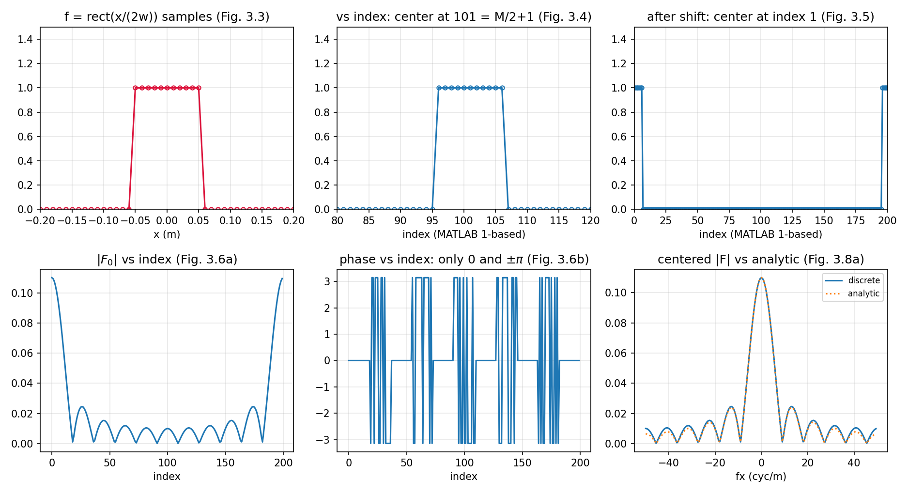
3.6 卷积例子#
用 FFT + 傅里叶卷积定理（表 1.1）做卷积。例子：两个不同宽度的高斯函数。新建 M 文件 conv_example：
% conv_example - Convolution: two Gaussian functions
wa=0.3; %Gaussian 1 width [exp(-pi) radius](m)
wb=0.2; %Gaussian 2 width [exp(-pi) radius](m)
L=2; %side length (meters)
M=200; %number of samples
dx=L/M; %sample interval (m)
x=[-L/2:dx:L/2-dx]; %x coordinates
fa=exp(-pi*(x.^2)/wa^2); %Gaussian a
fb=exp(-pi*(x.^2)/wb^2); %Gaussian b
figure(1)
plot(x,fa,x,fb,'--'); title ('functions');
xlabel('x (m)');
两个细节：注释里的 [exp(-pi) radius] 意思是 \(f_a(w_a) = e^{-\pi} \approx 0.043\) 的半径——不是 \(1/e\) 半径；x.^2 的点号不能少——没有点号 MATLAB 会试图做向量/矩阵的幂运算而不是逐元素平方。
Fa=fft(fa); %transform fa
Fb=fft(fb); %transform fb
F0=Fa.*Fb; %multiply pointwise
f0=ifft(F0)*dx; %inverse transform and scale
f=fftshift(f0); %center result
figure(2)
plot(x,f); title('convolution')
xlabel('x (m)')
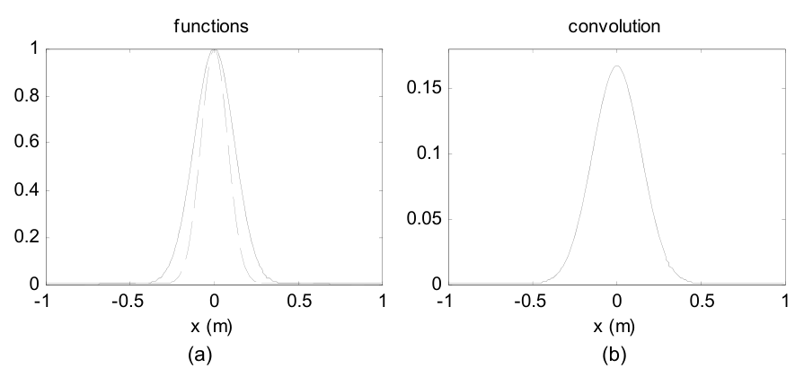
FFT 卷积五行代码的要点：
fa、fb不必预移位：卷积只依赖两个函数的相对位置，两者都居中、相对位移为零就行（为什么线性相位不捣乱，见下面的拓展框）。但注意：逆变换结果f0停在移位排列（峰值在 index 1），所以最后一行fftshift把它居中。.*是逐点相乘（element-wise），点号不能丢——丢了就变成向量/矩阵乘法。numpy 方向恰好相反：*天然逐元素，矩阵乘法才要另写@。- 定标只乘一次
dx（不是 \(\mathrm{d}x^2\)）：ifft(fft(a)*fft(b))*dx ≈ ∫f(τ)h(x-τ)dτ。
与 2.6 节呼应的关键检查——支撑判据：周期延拓要求两函数支撑之和小于向量边长。从图 3.9(a) 估读：\(D_a \approx 0.9\) m、\(D_b \approx 0.6\) m，和 \(1.5 < L = 2\) ✓——图 3.9(b) 是解析卷积的好表示（习题 3.2 就是让你亲手验这个）。
书里补了一句工程现状：本书的卷积都直接按卷积定理写，但 MATLAB 有内置 conv/conv2——它们通过零填充到双倍尺寸严格避免周期卷积的伪影；本书为了计算速度与固定阵列尺寸，选择自己留心支撑。
拓展：'不移位'卷积的相位账
居中排列的 fa 直接喂 fft，等于对 \(f_a(x + L/2)\)——平移过的函数——做变换，多出因子 \(e^{+j2\pi f_X L/2}\)（位移定理）；fb 同理，多出同样的因子。相乘后 \(e^{+j2\pi f_X L}\)：对应空域平移一整个周期 \(L\)——在 FFT 的周期世界里，平移一整圈等于没动（模 \(L\) 不可见）。所以两个因子的存在完全不影响卷积形状；唯一后果是结果落在"移位排列"（峰值在 index 1），需要 fftshift 找回中心。反例：只预移位其中一个函数，两个因子不再成对，卷积整体错位半周期——下面脚本实测峰值跑到了 \(x = -1.0\) m（\(= -L/2\)）。
拓展：为什么这个高斯卷积精确到机器精度
实测 FFT 卷积与解析式的最大差异只有 \(5.3\times10^{-12}\)——比"矩形求和近似"的正常水平（第 2 章是 \(10^{-3}\) 量级）好得多。原因是 Poisson 求和的一个漂亮推论：对高斯这种衰减极快的函数，离散求和与连续积分之差约为 \(e^{-\pi/\Delta x^2}\)（周期副本的尾部贡献），\(\Delta x = 0.01\) 时是 \(e^{-31414}\)——天文数字般地小于浮点精度。所以剩余误差纯粹是 FFT 本身的舍入。别把这份"免费午餐"推广到 rect 这类硬边函数——第 2 章的卷积例子（rect ∗ 三角形）误差就在 \(10^{-3}\) 量级。
解析卷积（习题 3.2 的答案）顺手推出来：用表 1.3 的高斯对 \(\exp(-\pi x^2/w^2) \leftrightarrow w\exp(-\pi w^2 f_X^2)\)，频域相乘得 \(w_a w_b \exp[-\pi(w_a^2+w_b^2)f_X^2]\)，再逆变换：
峰值 \(= 0.06/\sqrt{0.13} = 0.16641\)，与图 3.9(b) 的峰一致。
% ===== 书 3.6 节 + 习题 3.2：两个高斯函数的 FFT 卷积与解析对比 =====
% 参数（书 3.6 节）：wa = 0.3 m、wb = 0.2 m——注释原文 "[exp(-pi) radius]"，
% 意思是 fa(wa) = exp(-pi) ≈ 0.043 的半径（不是 1/e 半径！）；L = 2、M = 200。
% 支撑判据（式 2.27）：Da ≈ 0.9、Db ≈ 0.6，和 1.5 < L = 2 -> 卷绕可忽略。
% 书的技巧：fa、fb 都居中排列，FFT 前【不移位】——两个函数携带同一线性
% 相位，乘积相位对应"整周期平移"，模 L 不可见；但逆变换结果停在"移位
% 排列"（峰值在 index 1），所以要 fftshift 居中。只移位其中一个函数，
% 卷积结果就会整体错位 L/2（本脚本有反例演示）。
% MATLAB/Python 差异：.* 与 .^ 的点号在 numpy 里不需要——Python 的 * 与
% ** 天然逐元素，矩阵乘法反而要另写 @ / np.matmul，方向恰好相反。
clear; clc; close all;
wa = 0.3; % 高斯 a 宽度 [exp(-pi) 半径] (m)
wb = 0.2; % 高斯 b 宽度 [exp(-pi) 半径] (m)
L = 2; % 边长 (m)
M = 200; % 样本数
dx = L/M; % 采样间隔 (m)
x = -L/2:dx:L/2-dx; % x 坐标（式 2.21）
fa = exp(-pi*(x.^2)/wa^2); % 高斯 a（注意 .^ 是逐元素平方）
fb = exp(-pi*(x.^2)/wb^2); % 高斯 b
% ---------- FFT 卷积（书 3.6 节，输入不移位） ----------
Fa = fft(fa); % 变换 fa
Fb = fft(fb); % 变换 fb
F0 = Fa.*Fb; % 逐点相乘（.* 不是 *，忘点号是最常见错误！）
f0 = ifft(F0)*dx; % 逆变换；卷积定标只乘一次 dx（不是 dx^2）
f = fftshift(f0); % 居中（书图 3.9(b)）
% ---------- 解析卷积（习题 3.2） ----------
% exp(-pi*x^2/w^2) <-> w*exp(-pi*w^2*fx^2)（表 1.3 高斯对）。频域相乘：
% wa*wb*exp(-pi*(wa^2+wb^2)*fx^2)，逆变换回去：
% c(x) = wa*wb/sqrt(wa^2+wb^2) * exp(-pi*x^2/(wa^2+wb^2))
c_an = wa*wb/sqrt(wa^2+wb^2) * exp(-pi*x.^2/(wa^2+wb^2));
fprintf('解析卷积峰值 = %.6f；FFT 卷积峰值 = %.6f\n', max(c_an), max(f));
fprintf('FFT 卷积与解析最大差异 = %.2e（高斯衰减极快：离散求和与连续积分之差达机器精度）\n', ...
max(abs(f - c_an)));
% ---------- 反例：只移位一个函数 -> 卷积整体错位 ----------
fa_s = ifftshift(fa); % 只把 fa 挪到移位排列
f_wrong = fftshift(real(ifft(fft(fa_s).*fft(fb))*dx));
[~, iw] = max(f_wrong);
fprintf('只移位 fa：卷积峰出现在 x = %.2f m（应为 0 -> 整体错位 L/2）\n', x(iw));
% ---------- 画图：复现书图 3.9 + 解析对比 ----------
figure('Position', [80 80 950 380]);
subplot(1,2,1);
plot(x, fa, x, fb, '--'); grid on;
xlabel('x (m)'); title('functions (Fig. 3.9a)');
legend('f_a (w_a=0.3)', 'f_b (w_b=0.2)', 'FontSize', 8);
subplot(1,2,2);
plot(x, f, x, c_an, ':'); grid on;
xlabel('x (m)'); title('convolution: FFT vs analytic (Fig. 3.9b + Ex. 3.2)');
legend('FFT', 'analytic', 'FontSize', 8);
saveas(gcf, 'out_conv_example.png');
fprintf('已保存 out_conv_example.png\n');
# ===== 书 3.6 节 + 习题 3.2：两个高斯函数的 FFT 卷积与解析对比 =====
# 参数（书 3.6 节）：wa = 0.3 m、wb = 0.2 m——注释原文 "[exp(-pi) radius]"，
# 意思是 fa(wa) = exp(-pi) ≈ 0.043 的半径（不是 1/e 半径！）；L = 2、M = 200。
# 支撑判据（式 2.27）：Da ≈ 0.9、Db ≈ 0.6，和 1.5 < L = 2 -> 卷绕可忽略。
# 书的技巧：fa、fb 都居中排列，FFT 前【不移位】——两个函数携带同一线性
# 相位，乘积相位对应"整周期平移"，模 L 不可见；但逆变换结果停在"移位
# 排列"（峰值在 index 0），所以要 fftshift 居中。只移位其中一个函数，
# 卷积结果就会整体错位 L/2（本脚本有反例演示）。
# MATLAB/Python 差异：MATLAB 要 .* 与 .^ 表示逐元素，忘点号不报错但结果
# 离谱；numpy 的 * 与 ** 天然逐元素，矩阵乘法反而要另写 @ / np.matmul
# ——两边的"默认值"方向恰好相反。
import os
import sys
import numpy as np
import matplotlib.pyplot as plt
sys.path.insert(0, os.path.join(os.path.dirname(os.path.abspath(__file__)), "..", "common"))
from base import coords # 公共积木：式 (2.21)/(2.22) 的网格坐标（ch2 起）
wa, wb = 0.3, 0.2 # 高斯宽度 [exp(-pi) 半径] (m)
L, M = 2.0, 200 # 边长 (m)、样本数
dx = L / M # 采样间隔 (m)
x, _ = coords(L, M) # x 坐标（式 2.21）
fa = np.exp(-np.pi * x ** 2 / wa ** 2) # 高斯 a
fb = np.exp(-np.pi * x ** 2 / wb ** 2) # 高斯 b
# ---------- FFT 卷积（书 3.6 节，输入不移位） ----------
Fa = np.fft.fft(fa) # 变换 fa
Fb = np.fft.fft(fb) # 变换 fb
F0 = Fa * Fb # 逐点相乘（numpy 的 * 就是 MATLAB 的 .*）
f0 = np.fft.ifft(F0) * dx # 逆变换；卷积定标只乘一次 dx（不是 dx^2）
f = np.fft.fftshift(f0.real) # 居中（书图 3.9b；虚部是机器精度残渣）
# ---------- 解析卷积（习题 3.2） ----------
# exp(-pi*x^2/w^2) <-> w*exp(-pi*w^2*fx^2)（表 1.3 高斯对）。频域相乘：
# wa*wb*exp(-pi*(wa^2+wb^2)*fx^2)，逆变换回去：
# c(x) = wa*wb/sqrt(wa^2+wb^2) * exp(-pi*x^2/(wa^2+wb^2))
c_an = wa * wb / np.sqrt(wa ** 2 + wb ** 2) * np.exp(-np.pi * x ** 2 / (wa ** 2 + wb ** 2))
print(f"解析卷积峰值 = {c_an.max():.6f}；FFT 卷积峰值 = {f.max():.6f}")
print(f"FFT 卷积与解析最大差异 = {np.max(np.abs(f - c_an)):.2e}"
"（高斯衰减极快：离散求和与连续积分之差达机器精度）")
# ---------- 反例：只移位一个函数 -> 卷积整体错位 ----------
fa_s = np.fft.ifftshift(fa) # 只把 fa 挪到移位排列
f_wrong = np.fft.fftshift((np.fft.ifft(np.fft.fft(fa_s) * np.fft.fft(fb)) * dx).real)
iw = int(np.argmax(f_wrong))
print(f"只移位 fa：卷积峰出现在 x = {x[iw]:.2f} m（应为 0 -> 整体错位 L/2）")
# ---------- 画图：复现书图 3.9 + 解析对比 ----------
fig, axes = plt.subplots(1, 2, figsize=(9.5, 3.8))
axes[0].plot(x, fa, label=r"$f_a$ ($w_a$=0.3)")
axes[0].plot(x, fb, "--", label=r"$f_b$ ($w_b$=0.2)")
axes[0].set_xlabel("x (m)"); axes[0].set_title("functions (Fig. 3.9a)")
axes[0].legend(fontsize=8)
axes[1].plot(x, f, label="FFT")
axes[1].plot(x, c_an, ":", label="analytic")
axes[1].set_xlabel("x (m)")
axes[1].set_title("convolution: FFT vs analytic (Fig. 3.9b + Ex. 3.2)")
axes[1].legend(fontsize=8)
for ax in axes:
ax.grid(True, alpha=0.3)
fig.tight_layout()
fig.savefig(os.path.join(os.path.dirname(os.path.abspath(__file__)),
"out_conv_example.png"), dpi=150)
print("已保存 out_conv_example.png")
Python 实测：
- 解析卷积峰值 \(0.166410\)，FFT 卷积峰值 \(0.166410\)，最大差异 \(5.32\times10^{-12}\)——机器精度（原因见上面的拓展框）；
- 反例：只
ifftshift其中一个函数，卷积峰跑到 \(x = -1.00\) m——整体错位 \(L/2\)，坐实"要么都别移、要么严格按相对位置移"。
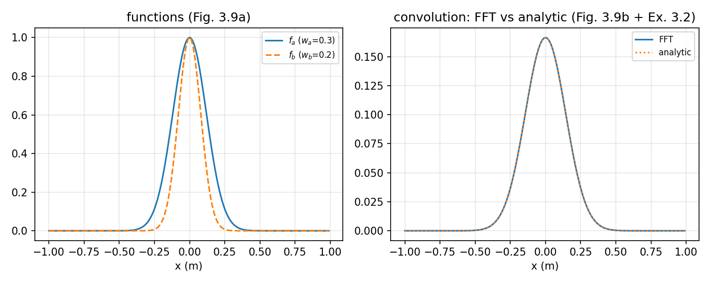
3.7 二维#
物理光学问题至少两个空间维度。新建 M 文件 fft2_example，生成二维采样矩形：
% fft2_example - 2D FFT example
wx=0.1; %rect x half-width (m)
wy=0.05; %rect y half-width (m)
L=2; %side length x&y (m)
M=200; %samples/side length
dx=L/M; %sample interval (m)
x=-L/2:dx:L/2-dx; %x coordinates
y=x; %y coordinates
[X,Y]=meshgrid(x,y); %X and Y grid coords
g=rect(X/(2*wx)).*rect(Y/(2*wy)); %signal
即 0.2 × 0.1 m 的矩形放进 200 × 200 阵列（对应 2 × 2 m）。meshgrid 生成坐标阵列 X、Y（大写）：X 的行是 x 的副本，Y 的列是 y 的副本。有了 X、Y，二维信号的代码长得和解析式一样（可分离乘积）。
把 g 显示成图像：
figure(1)
imagesc(x,y,g); %image display
colormap('gray'); %linear gray display map
axis square; %square figure
axis xy %y positive up
xlabel('x (m)'); ylabel('y (m)');
imagesc 把阵列数据缩放到全显示范围；colormap 提供伪彩色（这里用灰度）；axis square 把图窗边框变成正方形（\(x\)、\(y\) 边长相同的时候有用）。方向注意：常规图像文件的第 1 行对应画面顶部，MATLAB 图像显示因此默认 \(y\) 值自上而下增；axis xy 把 \(y\) 轴翻回自下而上增的笛卡尔习惯。
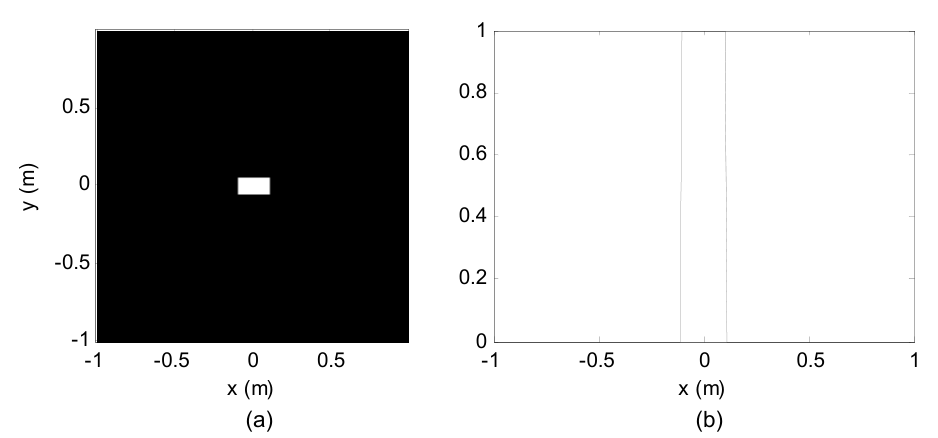
二维结果也常用一维**切片（slice/profile）**检查。g(M/2+1,:) 选第 \(M/2+1\) 行——行对应 \(y\)，所以这是 \(y=0\) 的横向剖面（图 3.10(b)）。
做二维 FFT：
g0=fftshift(g); %shift
G0=fft2(g0)*dx^2; %2D fft and dxdy scaling
G=fftshift(G0); %center
fx=-1/(2*dx):1/L:1/(2*dx)-(1/L);%x freq coords
fy=fx; %y freq coords
fftshift 对二维阵列按 2.4 节的"象限对调"方式工作；二维变换必须用 fft2（定标因子相应是 \(\mathrm{d}x^2\)）。
用曲面图加中心剖面显示变换幅度：
figure(3)
surf(fx,fy,abs(G)) %display transform magnitude
camlight left; lighting phong
colormap('gray')
shading interp
ylabel('fy (cyc/m)'); xlabel('fx (cyc/m)');
figure(4)
plot(fx,abs(G(M/2+1,:))); %fx slice profile
title('magnitude');
xlabel('fx (cyc/m)');
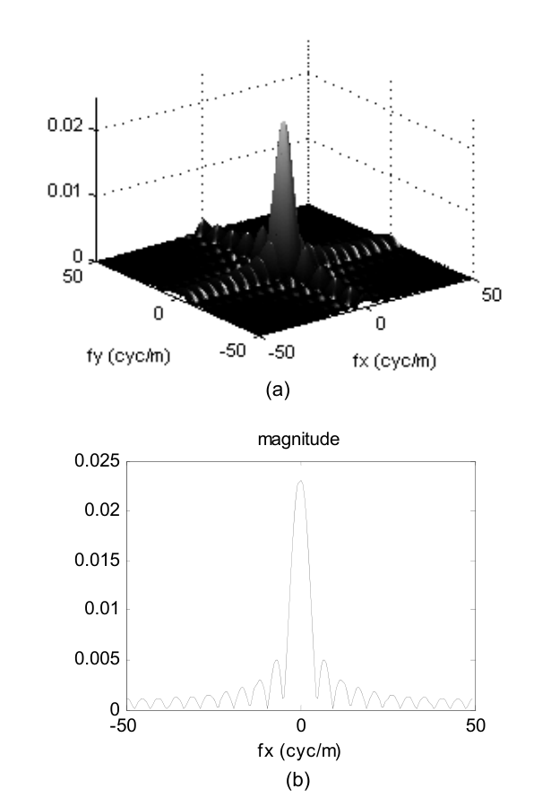
书图 3.11(b) 的峰值为什么是 0.023 而不是 0.02（数值实锤）
连续矩形的面积是 \(4w_xw_y = 0.02\)，按中心纵坐标定理频谱峰值应为 0.020。但书图 3.11(b) 的峰约 0.023——这不是画错，也不是混叠，而是 3.1 节"奇数样本"约定的直接后果：\(w_x = 0.1\)、\(w_y = 0.05\) 都是偶数样本宽（0.2 m = 20 个间隔、0.1 m = 10 个间隔），rect 按"边界取 1、多给一个样本"的约定各多含一圈边界样本——\(x\) 向 21 个、\(y\) 向 11 个样本。离散面积 \(= 21\times11\times\mathrm{d}x^2 = 0.0231\)，FFT 的 DC 样本精确等于它（离散版的中心纵坐标定理）。验证：FFT 剖面与离散精确谱（Dirichlet 核）之差 \(4\times10^{-18}\)（机器精度），与连续解析谱 \(4w_xw_y\,\mathrm{sinc}(2w_x f_X)\) 之差 \(3.1\times10^{-3}\)（集中在 DC）。教训：矩形这类"边界敏感"函数的离散面积对半宽的奇偶极敏感；要面积准，要么选奇数样本宽（如 \(w=0.055\)），要么在解读频谱峰值时心里有数。
完整脚本（与仓库文件一致）：
% ===== 书 3.7 节：二维矩形函数、meshgrid、imagesc 与二维 FFT =====
% 参数：wx = 0.1 m、wy = 0.05 m 的矩形（0.2 × 0.1 m），L = 2 m、M = 200/边
% -> dx = 0.01 m，200×200 阵列对应 2 × 2 m。
% MATLAB/Python 差异：
% - meshgrid 两边行为一致（'xy'：X 的行是 x 的副本、Y 的列是 y 的副本；
% Python 若写 indexing='ij' 两维会互换）；
% - (M/2+1,:) 选第 M/2+1 行 = y=0 的行（行 <-> y！），Python 是 g[M//2, :]；
% - imagesc 默认 y 向下，axis xy 翻转；Python imshow 用 origin='lower'；
% - 二维必须 fft2/ifft2（Python np.fft.fft2）：一维 fft 作用于二维阵列
% 只变换行向量，得到"条纹"状错误结果（书 3.8 节原话）。
clear; clc; close all;
wx = 0.1; % 矩形 x 半宽 (m)
wy = 0.05; % 矩形 y 半宽 (m)
L = 2; % 边长 x&y (m)
M = 200; % 每边样本数
dx = L/M; % 采样间隔 (m)
x = -L/2:dx:L/2-dx; % x 坐标
y = x; % y 坐标
[X, Y] = meshgrid(x, y); % X 的行 = x 的副本；Y 的列 = y 的副本
g = rect(X/(2*wx)).*rect(Y/(2*wy)); % 二维矩形（可分离乘积，调 rect.m）
% ---------- 图像显示（书图 3.10a）与中心切片（书图 3.10b） ----------
% imagesc 把数组缩放到全显示范围；colormap('gray') 灰度；axis square 方形
% 边框；axis xy 让 y 自下而上——常规图像文件第 1 行在顶部，MATLAB 图像
% 显示默认 y 向下增，axis xy 把它翻回笛卡尔习惯。
figure('Position', [60 60 1000 420]);
subplot(1,2,1);
imagesc(x, y, g); colormap('gray'); axis square; axis xy;
xlabel('x (m)'); ylabel('y (m)'); title('g(x,y): 2D rect (Fig. 3.10a)');
subplot(1,2,2);
plot(x, g(M/2+1,:), '-o', 'MarkerSize', 4); grid on; % 第 M/2+1 行 = y=0
axis([-1 1 0 1.2]); xlabel('x (m)');
title('x-slice through g(M/2+1,:) (Fig. 3.10b)');
% ---------- 二维 FFT ----------
g0 = fftshift(g); % 预移位（偶数 M：fftshift = ifftshift）
G0 = fft2(g0) * dx^2; % 二维 FFT 并乘 dx^2 定标（式 2.19 的二维版）
G = fftshift(G0); % 居中
fx = -1/(2*dx) : 1/L : 1/(2*dx) - 1/L; % 频率坐标（式 2.22）
fy = fx;
% ---------- 变换幅度显示：曲面 + 中心剖面（书图 3.11） ----------
% surf 曲面显示；camlight/lighting/shading 只是化妆。fy=0 剖面有两条参照：
% (1) 连续矩形解析谱 4*wx*wy*|sinc(2*wx*fx)|，峰值 = 面积 0.020；
% (2) 离散精确谱（Dirichlet 核）：|G(fx,0)| = dx^2*ny*|sin(nx*pi*fx*dx)|
% ./|sin(pi*fx*dx)|，nx/ny 是 x/y 向值为 1 的样本数（21、11）——
% FFT 剖面应与它逐点重合，峰值 = 离散面积 21*11*dx^2 = 0.0231。
% 书图 3.11(b) 的峰 ~0.023 正是这个离散面积：wx=0.1、wy=0.05 都是
% "偶数样本宽"，书 rect 的奇数样本约定各多给一圈边界样本（3.1 节），
% 不是混叠。
nx = sum(rect(X/(2*wx))(:)); % x 向值为 1 的样本数（21）
ny = sum(rect(Y/(2*wy))(:)); % y 向值为 1 的样本数（11）
D = abs(sin(nx*pi*fx*dx) ./ sin(pi*fx*dx));
D(fx == 0) = nx; % 0/0 极限
slice_exact = dx^2 * ny * D;
figure('Position', [80 80 1150 420]);
subplot(1,2,1);
surf(fx, fy, abs(G), 'EdgeColor', 'none'); colormap('gray');
xlabel('fx (cyc/m)'); ylabel('fy (cyc/m)');
title('|G(f_x,f_y)| surface (Fig. 3.11a)');
subplot(1,2,2);
plot(fx, abs(G(M/2+1,:)), fx, slice_exact, ':', ...
fx, 4*wx*wy*abs(sincn(2*wx*fx)), '--'); grid on;
xlabel('fx (cyc/m)'); xlim([-50 50]);
title('fx slice: FFT vs two references (Fig. 3.11b)');
legend('FFT', 'discrete exact (Dirichlet)', '4w_xw_y sinc(2w_x f_x)', 'FontSize', 8);
fprintf('x/y 向值为 1 的样本数 = %d x %d（边界取 1 的奇数样本约定）\n', nx, ny);
fprintf('DC 样本 |G(0,0)| = %.6f = 离散面积 %d*%d*dx^2 = %.4f\n', ...
abs(G(M/2+1, M/2+1)), nx, ny, nx*ny*dx^2);
fprintf(' （连续矩形面积 4*wx*wy = %.3f；书图 3.11(b) 的峰 ~0.023 就是离散面积）\n', ...
4*wx*wy);
in_main = abs(fx) <= 25;
fprintf('fy=0 剖面 vs 离散精确谱（Dirichlet）最大差异 = %.2e（机器精度）\n', ...
max(abs(abs(G(M/2+1,in_main)) - slice_exact(in_main))));
fprintf('fy=0 剖面 vs 连续解析谱最大差异 = %.4f（DC 处 0.0231 vs 0.020 + 零点错位）\n', ...
max(abs(abs(G(M/2+1,in_main)) - 4*wx*wy*abs(sincn(2*wx*fx(in_main))))));
saveas(gcf, 'out_fft2_example.png');
fprintf('已保存 out_fft2_example.png\n');
% ---------- 局部函数 ----------
function s = sincn(u)
% 归一化 sinc：sin(pi*u)/(pi*u)，u=0 处极限 1（表 1.2；np.sinc 同定义）
s = ones(size(u));
nz = u ~= 0;
s(nz) = sin(pi*u(nz)) ./ (pi*u(nz));
end
# ===== 书 3.7 节：二维矩形函数、meshgrid、图像显示与二维 FFT =====
# 参数：wx = 0.1 m、wy = 0.05 m 的矩形（0.2 × 0.1 m），L = 2 m、M = 200/边
# -> dx = 0.01 m，200×200 阵列对应 2 × 2 m。
# MATLAB/Python 差异：
# - np.meshgrid 默认 indexing='xy' 与 MATLAB meshgrid 一致（X 的行是 x
# 的副本、Y 的列是 y 的副本）；写 'ij' 两维会互换；
# - MATLAB g(M/2+1,:) 选第 M/2+1 行 = y=0 的行（行 <-> y！）；Python
# 0-based 是 g[M//2, :]；
# - plt.imshow 默认 y 向下，origin='lower' 翻转（MATLAB 用 axis xy）；
# - 二维必须 fft2（np.fft.fft2）：一维 fft 作用于二维阵列只变换一行行
# 向量，得到"条纹"状错误结果（书 3.8 节原话）。
import os
import sys
import numpy as np
import matplotlib.pyplot as plt
from mpl_toolkits.mplot3d import Axes3D # noqa: F401 （注册 3D 投影，新版本可省）
sys.path.insert(0, os.path.join(os.path.dirname(os.path.abspath(__file__)), "..", "common"))
from base import coords, sinc # 公共积木（ch2 起）
def rect_book(x):
"""书 3.1 节的 rect 编码：abs(x) <= 1/2 -> 1（见 ch3_fft_example.py 注释）。"""
return (np.abs(x) <= 0.5).astype(float)
wx, wy = 0.1, 0.05 # 矩形 x/y 半宽 (m)
L, M = 2.0, 200 # 边长 (m)、每边样本数
dx = L / M # 采样间隔 (m)
x, _ = coords(L, M) # x 坐标
y = x # y 坐标
X, Y = np.meshgrid(x, y) # X 的行 = x 的副本；Y 的列 = y 的副本
g = rect_book(X / (2 * wx)) * rect_book(Y / (2 * wy)) # 二维矩形（可分离乘积）
# ---------- 二维 FFT ----------
# 书：g0=fftshift(g); G0=fft2(g0)*dx^2; G=fftshift(G0)——偶数 M 下
# fftshift 与 ifftshift 等价；本文件按第 2 章的严谨配对写 ifftshift。
G0 = np.fft.fft2(np.fft.ifftshift(g)) * dx ** 2 # 二维 FFT × dx^2 定标
G = np.fft.fftshift(G0) # 居中
_, fx = coords(L, M) # 频率坐标（式 2.22；coords 首个返回值是空域 x！）
fy = fx # 两维相同
# ---------- 数值检查 ----------
row = M // 2 # y=0 的行（MATLAB g(M/2+1,:)）
# 书 rect 编码（边界取 1）下，x 向 |X|<=0.1 命中 21 个样本、y 向 11 个：
# wx=0.1、wy=0.05 都是"偶数样本宽"，按 3.1 节的约定各多给一个边界样本。
nx = int(rect_book(x / (2 * wx)).sum()) # 21
ny = int(rect_book(y / (2 * wy)).sum()) # 11
# 离散精确谱（Dirichlet 核）：FFT 剖面应与它机器精度重合
with np.errstate(invalid="ignore", divide="ignore"):
D = np.sin(nx * np.pi * fx * dx) / np.sin(np.pi * fx * dx)
D[fx == 0] = nx # 0/0 极限
slice_exact = dx ** 2 * ny * np.abs(D)
slice_an = 4 * wx * wy * np.abs(sinc(2 * wx * fx)) # 连续矩形解析谱
in_main = np.abs(fx) <= 25
err_exact = np.max(np.abs(np.abs(G[row, :][in_main]) - slice_exact[in_main]))
err_an = np.max(np.abs(np.abs(G[row, :][in_main]) - slice_an[in_main]))
print(f"x/y 向值为 1 的样本数 = {nx} x {ny}（边界取 1 的奇数样本约定）")
print(f"DC 样本 |G(0,0)| = {abs(G[row, row]):.6f} = 离散面积 "
f"{nx}·{ny}·dx² = {nx * ny * dx ** 2:.4f}")
print(f" （连续矩形面积 4wx·wy = {4 * wx * wy:.3f}；书图 3.11(b) 峰值 ~0.023 "
"就是离散面积，")
print(" 不是混叠——wx、wy 恰好都是偶数样本宽，rect 各多给一个边界样本）")
print(f"fy=0 剖面 vs 离散精确谱（Dirichlet）最大差异 = {err_exact:.2e}（机器精度）")
print(f"fy=0 剖面 vs 连续解析谱最大差异 = {err_an:.4f}"
"（DC 处 0.0231 vs 0.020 + 零点错位）")
# ---------- 显示：图像 + 切片 + 曲面 + 频域剖面（书图 3.10/3.11） ----------
fig = plt.figure(figsize=(12.5, 8.4))
ax1 = fig.add_subplot(2, 2, 1)
ax1.imshow(g, extent=[x[0], x[-1], y[0], y[-1]],
origin="lower", cmap="gray") # origin='lower' = MATLAB axis xy
ax1.set_xlabel("x (m)"); ax1.set_ylabel("y (m)")
ax1.set_title("g(x,y): 2D rect (Fig. 3.10a)")
ax2 = fig.add_subplot(2, 2, 2)
ax2.plot(x, g[row, :], "o-", ms=3, color="crimson", mfc="none") # y=0 行切片
ax2.set_xlim(-1, 1); ax2.set_ylim(0, 1.2)
ax2.set_xlabel("x (m)")
ax2.set_title("x-slice through g[M//2,:] (Fig. 3.10b)")
ax3 = fig.add_subplot(2, 2, 3, projection="3d")
FXf, FYf = np.meshgrid(fx, fy) # 曲面用频率网格
ax3.plot_surface(FXf, FYf, np.abs(G), cmap="gray",
rstride=2, cstride=2, linewidth=0)
ax3.set_xlabel("fx (cyc/m)"); ax3.set_ylabel("fy (cyc/m)")
ax3.set_title(r"$|G(f_X,f_Y)|$ surface (Fig. 3.11a)")
ax4 = fig.add_subplot(2, 2, 4)
ax4.plot(fx, np.abs(G[row, :]), label="FFT")
ax4.plot(fx, slice_exact, ":", lw=1, label="discrete exact (Dirichlet)")
ax4.plot(fx, slice_an, "--", lw=1, label=r"$4w_xw_y\,\mathrm{sinc}(2w_x f_x)$")
ax4.set_xlim(-50, 50); ax4.set_xlabel("fx (cyc/m)")
ax4.set_title("fx slice: FFT vs two references (Fig. 3.11b)")
ax4.legend(fontsize=8)
for ax in (ax1, ax2, ax4):
ax.grid(True, alpha=0.3)
fig.tight_layout()
fig.savefig(os.path.join(os.path.dirname(os.path.abspath(__file__)),
"out_fft2_example.png"), dpi=150)
print("已保存 out_fft2_example.png")
Python 实测：
- \(x\) 向 21 个、\(y\) 向 11 个样本为 1（奇数样本约定各多一圈边界）；DC 样本 \(|G(0,0)| = 0.023100 = 21\cdot11\cdot\mathrm{d}x^2\)；
- \(f_Y=0\) 剖面 vs 离散精确谱（Dirichlet 核）：最大差异 \(4.1\times10^{-18}\)——机器精度，二维
ifftshift → fft2 → fftshift × dx²全链条定标无误； - 同一剖面 vs 连续解析谱 \(4w_xw_y\,\mathrm{sinc}\)：最大差异 \(3.1\times10^{-3}\)——DC 处 0.0231 vs 0.020，加上样本错过 sinc 零点。
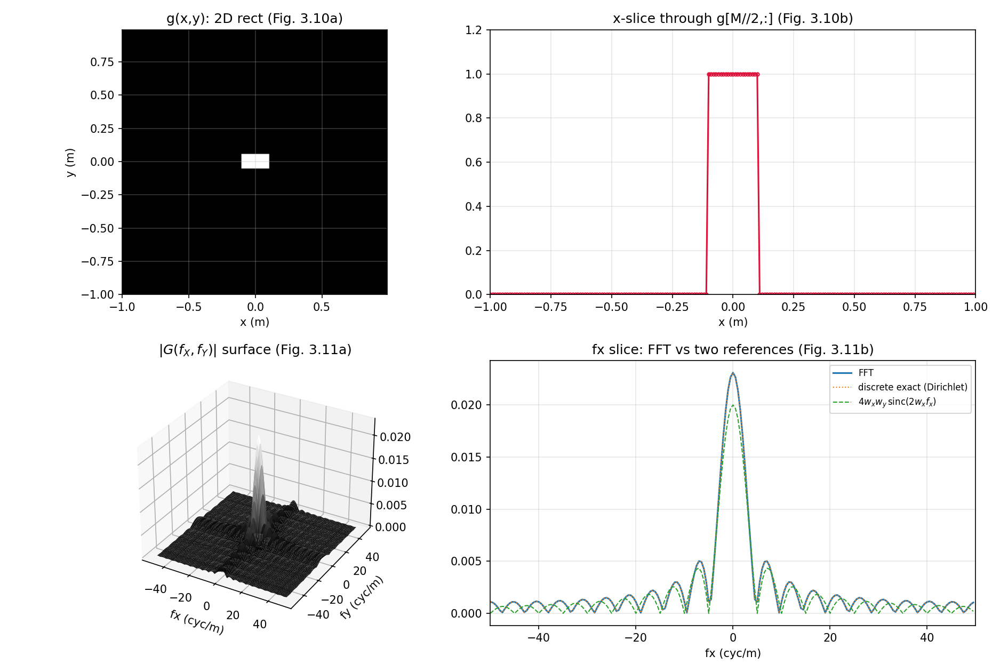
拓展：surf 与 imagesc 的 Python 对应
surf(fx,fy,abs(G)) 对应 ax.plot_surface(FXf, FYf, np.abs(G), cmap='gray')（注意先给频率坐标 meshgrid 出二维网格）；camlight/lighting/shading interp 是光照化妆，matplotlib 里没有严格对应，linewidth=0 + 平滑 cmap 是最接近的观感。imagesc(x,y,g) 对应 plt.imshow(g, extent=[x0,x1,y0,y1], origin='lower')——extent 给物理坐标，origin='lower' 行使 axis xy 的职责，vmin/vmax 对应 imagesc 的自动缩放范围控制。
3.8 其他提示#
原书的一袋 MATLAB 提示，逐条配 Python 对应：
- clear all / close all：MATLAB 变量与图窗跨运行保留，脚本开头清场。Python 对应：IPython 里
%reset（清变量）/plt.close('all')（清图窗）；脚本化以后影响不大，但调试时有用。 - 显示复数结果：运算后机器精度可能留下残余虚部，
plot/imagesc会拒绝画并警告 complex。用real或abs处理后再画。numpy 同理：取.real或np.abs（本笔记脚本普遍用.real，虚部本就只是残渣）。 - 图像对比度：本书印刷用灰度
imagesc，但看低值特征时换彩色映射更清楚。灰度图看暗部的快速技巧：显示图像的 n 次方根，如nthroot(g,3)——根越高对比度拉得越开。别忘了你看的是峰值归一 + 对比度拉伸的图。Python：g**(1/3)，或 matplotlib 的PowerNorm(gamma=1/3)。 - 向量化运算：盯紧点号——
A.*B是逐元素乘。最常见的编程错误就是该点点号而忘了：通常不报错，只是结果不对。排查问题时先查向量运算。（numpy 方向相反：*就是逐元素，要矩阵乘法才写@——从 MATLAB 转过来的人在这里翻车的最多。） - 二维变换：二维务必用
fft2/ifft2——不是fft/ifft。一维函数作用在二维阵列上往往给出"重复的一维结果"（图看起来带条纹）——不好！numpy 的np.fft.fft沿最后一个轴变换，二维阵列会得到每行各自的一维谱，同样是条纹。
3.9 习题（原书）#
原书 3 道题。每题给题目与提示，参考答案放折叠框——先自己动手。
3.1 三角函数 M 文件：(a) 建一个三角函数 M 文件，书给的提示代码：
(b) 用以下参数生成采样三角函数：底半宽 0.1 m、向量长 2 m、样本数 \(M=200\)。© 画图。(d) 求 FFT。(e) 推导解析傅里叶变换。(f) 幅度与相位都画在一起对比。
原书笔误：提示代码变量名不一致
提示第 2 行定义的变量叫 ask，第 3 行用的却是 mask——两个名字指同一个东西，照抄会报"未定义变量 mask"。正确意图显然是同一个逻辑掩码变量（本笔记统一写成 mask）。
3.1 参考答案要点
(a) 按习题尺度缩放：T = 1 - abs(x)/w; mask = abs(x) <= w; tri = T.*mask;（\(w=0.1\)）。边界 \(|x|=w\) 处 \(T=0\)，与表 1.2 的 tri 定义天然一致，没有 rect 那样的半值歧义（实测与 base.tri(x/w) 最大差异 0.0）。(e) 解析谱：表 1.3 的 \(\mathrm{tri}(x/w) \leftrightarrow w\,\mathrm{sinc}^2(w f_X)\)，\(w=0.1\) 即 \(0.1\,\mathrm{sinc}^2(0.1 f_X)\)，峰值 = 三角形面积 \(w = 0.1\)。(f) 数值：FFT 峰值 \(0.100000\)（严格 = 面积），\(|f_X|\le 30\) 内与解析最大差异 \(3.8\times10^{-4}\)。相位：tri 是实偶函数 → 相位仍只有 0 与 ±π。
3.2 高斯卷积的解析对比：把 3.6 节的两高斯卷积例子编成代码，求解析卷积并同图对比离散结果。
3.2 参考答案要点
解析卷积即式 (3.2)：\(c(x) = \dfrac{w_a w_b}{\sqrt{w_a^2+w_b^2}}\exp\!\big[-\pi x^2/(w_a^2+w_b^2)\big]\)。代入 \(w_a=0.3\)、\(w_b=0.2\)：峰值 \(0.06/\sqrt{0.13} = 0.16641\)、等效高斯宽度 \(\sqrt{w_a^2+w_b^2}=0.36\)。数值对比见 3.6 节脚本（ch3_conv_example）：最大差异 \(5.3\times10^{-12}\)。
3.3 圆函数 M 文件：(a) 建一个圆函数 M 文件。(b) 生成采样圆盘：半径 0.015 m、阵列边长 0.2 m、单维样本数 \(M=200\)。© 图像显示。(d) 做 FFT 并用曲面图与剖面图显示幅度。
提醒：圆函数的半径约定（衔接第 1 章勘误 1）
写 circ 时把半径写进调用式（如 circ(sqrt(X.^2+Y.^2)/R)，半径 = \(R\)），别依赖表 1.2/1.3 那套有歧义的约定。可靠的锚点：半径 \(R\) 圆盘 \(\leftrightarrow R\,J_1(2\pi R\rho)/\rho\)，峰值 = 圆盘面积 \(\pi R^2\)。
3.3 参考答案要点
(a) circ.m：out = (r <= 1);（与书 rect 同款"单点跳变"风格；文件全文如下）。(b) \(R = 0.015\) m、\(L=0.2\)、\(\mathrm{d}x = 0.001\) m——半径恰 15 个样本。(d) 频谱就是 jinc：数值峰值 \(7.010\times10^{-4}\) vs 解析 \(\pi R^2 = 7.069\times10^{-4}\)（差 0.8%——圆盘阶梯离散的正常水平）；\(f_Y=0\) 剖面与解析 jinc 最大差异 \(5.9\times10^{-6}\)（相对峰值约 1%）。边界细节：<= 与 < 两种编码相差 4 个恰好落在圆周上的样本（\((\pm0.015,0),(0,\pm0.015)\)），剖面差异 \(5.9\) vs \(9.9\times10^{-6}\)——无所谓，但要知道自己在用哪种。这套验证同时复核了第 1 章勘误 1 的锚点公式。
function out = circ(r)
% ===== 书习题 3.3：圆函数 M 文件（仿书 3.1 节 rect 的编码风格） =====
% 习题 3.3(a) 要求自建 circle function M 文件。书没给标准答案，这里按
% rect.m 的同一风格编写：输入径向坐标数组 r，输出 0/1。
% 调用方式：circ(sqrt(X.^2+Y.^2)/R) -> 半径 R 的圆盘。
% 半径约定警告（承接第 1 章勘误 1）：表 1.2 的 circ(r) 是"半径 1/2"圆盘，
% 表 1.3 的变换对却按"半径 = 分母"（Goodman 约定）计算。本函数用调用式
% circ(r/R) 把半径明确为 R，频谱就是可靠的锚点 R*J1(2*pi*R*rho)/rho
% （jinc 形），峰值 = 圆盘面积 pi*R^2（中心纵坐标定理）。
% 边界 r==1 取 1（与书 rect 的"单点跳变"风格一致）；Python 参考实现
% python/fourier/common/base.py 的 circle() 用严格小于——两者只差恰好
% 落在圆周上的少数样本，对频谱的影响可忽略（ch3_exercises 有数值验证）。
out = (r <= 1);
end
% ===== 书 3.9 节习题 3.1（三角函数）与 3.3（圆函数）参考解答 =====
% 3.1：底半宽 0.1 m 的三角函数，L = 2、M = 200。书提示的编码：
% T=1-abs(x); ask=abs(x)<=1; out=T.*mask;
% 其中 ask 与 mask 是同一个变量（原书笔误，两个名字混用，本文件统一
% 写成 mask）。按 3.1(b) 的尺度（底半宽 w = 0.1）缩放后，
% 解析频谱：tri(x/w) <-> w sinc^2(w fx)，w = 0.1 -> 0.1 sinc^2(0.1 fx)。
% 3.3：半径 0.015 m 的圆盘，L = 0.2、M = 200（dx = 0.001，半径恰 15 个样本）。
% 频谱 = jinc 形：R*J1(2*pi*R*rho)/rho，峰值 = 面积 pi*R^2 ≈ 7.07e-4。
% （半径约定见第 1 章勘误 1：本解按"半径 = R"的 Goodman 约定，
% 与表 1.3 的 circ 变换对一致。）
clear; clc; close all;
% ---------- 习题 3.1：三角函数 ----------
L = 2; M = 200; dx = L/M;
x = -L/2:dx:L/2-dx;
w = 0.1; % 底半宽 (m)
T = 1 - abs(x)/w; % 书提示第 1 行（按习题尺度缩放）
mask = abs(x) <= w; % 书提示第 2 行（原书写成 ask——笔误）
tri1 = T.*mask; % 书提示第 3 行：边界 |x|=w 处 T=0，无半值歧义
TRI = fftshift(fft(ifftshift(tri1)))*dx; % 居中 FFT × dx（ifftshift 配对更稳）
fx = -1/(2*dx) : 1/L : 1/(2*dx) - 1/L;
TRI_an = w*sincn(w*fx).^2; % tri(x/w) <-> w sinc^2(w fx)
fprintf('[3.1] 三角函数 FFT 峰值 = %.6f（解析 w = 0.1 = 三角形面积）\n', max(abs(TRI)));
fprintf('[3.1] FFT 与解析最大差异（|fx|<=30 内）= %.2e\n', ...
max(abs(abs(TRI(abs(fx) <= 30)) - TRI_an(abs(fx) <= 30))));
% ---------- 习题 3.3：圆函数 ----------
L2 = 0.2; M2 = 200; dx2 = L2/M2;
x2 = -L2/2:dx2:L2/2-dx2; y2 = x2;
[X, Y] = meshgrid(x2, y2);
R = 0.015; % 圆半径 (m) = 15 个样本
circ2 = circ(sqrt(X.^2+Y.^2)/R); % 调用习题 3.3(a) 建的 circ.m（同文件夹）
C = fftshift(fft2(fftshift(circ2)))*dx2^2; % 二维 FFT × dx^2（偶数 M 下 fftshift 配对成立）
fx2 = -1/(2*dx2) : 1/L2 : 1/(2*dx2) - 1/L2;
CC = C(M2/2+1, :); % fy=0 剖面
J_an = zeros(size(fx2));
nz = fx2 ~= 0;
J_an(nz) = R.*besselj(1, 2*pi*R*fx2(nz)) ./ fx2(nz); % R J1(2 pi R rho)/rho
J_an(~nz) = pi*R^2; % rho=0 极限 = 面积
fprintf('[3.3] 圆盘 FFT 峰值 = %.6e（解析面积 pi*R^2 = %.6e）\n', ...
max(abs(C(:))), pi*R^2);
fprintf('[3.3] fy=0 剖面与 jinc 最大差异（|fx|<=30 内）= %.2e\n', ...
max(abs(abs(CC(abs(fx2) <= 30)) - abs(J_an(abs(fx2) <= 30)))));
% ---------- 画图 ----------
figure('Position', [60 60 1150 700]);
subplot(2,2,1);
plot(x, tri1, '-o', 'MarkerSize', 4); grid on; axis([-0.3 0.3 0 1.2]);
xlabel('x (m)'); title('Ex 3.1: triangle, half-base 0.1 m');
subplot(2,2,2);
plot(fx, abs(TRI), fx, TRI_an, ':'); grid on; xlim([-60 60]);
xlabel('fx (cyc/m)'); title('Ex 3.1: |FFT| vs w sinc^2(w f_x)');
legend('discrete', 'analytic', 'FontSize', 8);
subplot(2,2,3);
imagesc(x2, y2, circ2); colormap('gray'); axis square; axis xy;
xlabel('x (m)'); ylabel('y (m)'); title('Ex 3.3: circle, R = 0.015 m');
subplot(2,2,4);
plot(fx2, abs(CC), 'o', 'MarkerSize', 4, fx2, abs(J_an), ':'); grid on;
xlim([-60 60]); xlabel('fx (cyc/m)');
title('Ex 3.3: slice vs jinc R J_1(2\pi R\rho)/\rho');
legend('discrete', 'analytic', 'FontSize', 8);
saveas(gcf, 'out_exercises.png');
fprintf('已保存 out_exercises.png\n');
% ---------- 局部函数 ----------
function s = sincn(u)
% 归一化 sinc：sin(pi*u)/(pi*u)，u=0 处极限 1（表 1.2；np.sinc 同定义）
s = ones(size(u));
nz = u ~= 0;
s(nz) = sin(pi*u(nz)) ./ (pi*u(nz));
end
# ===== 书 3.9 节习题 3.1（三角函数）与 3.3（圆函数）参考解答 =====
# 3.1：底半宽 0.1 m 的三角函数，L = 2、M = 200。书提示的编码：
# T=1-abs(x); ask=abs(x)<=1; out=T.*mask;
# 其中 ask 与 mask 是同一个变量（原书笔误，两个名字混用，本文件统一
# 写成 mask）。按 3.1(b) 的尺度（底半宽 w = 0.1）缩放后，
# 解析频谱：tri(x/w) <-> w sinc^2(w fx)，w = 0.1 -> 0.1 sinc^2(0.1 fx)。
# 3.3：半径 0.015 m 的圆盘，L = 0.2、M = 200（dx = 0.001，半径恰 15 个样本）。
# 频谱 = jinc 形：R*J1(2*pi*R*rho)/rho，峰值 = 面积 pi*R^2 ≈ 7.07e-4。
# （半径约定见第 1 章勘误 1：本解按"半径 = R"的 Goodman 约定，
# 与表 1.3 的 circ 变换对一致。）
import os
import sys
import numpy as np
import matplotlib.pyplot as plt
sys.path.insert(0, os.path.join(os.path.dirname(os.path.abspath(__file__)), "..", "common"))
from base import coords, sinc, tri, circle, jinc # 公共积木（ch2 起）
# ---------- 习题 3.1：三角函数 ----------
L, M = 2.0, 200
dx = L / M
x, fx = coords(L, M)
w = 0.1 # 底半宽 (m)
T = 1 - np.abs(x) / w # 书提示第 1 行（按习题尺度缩放）
mask = np.abs(x) <= w # 书提示第 2 行（原书写成 ask——笔误）
tri1 = T * mask # 第 3 行：边界 |x|=w 处 T=0，无半值歧义
print(f"[3.1] 与 base.tri(x/w) 最大差异 = "
f"{np.max(np.abs(tri1 - tri(x / w))):.1f}（同一函数的两种写法）")
TRI = np.fft.fftshift(np.fft.fft(np.fft.ifftshift(tri1))) * dx # 居中 FFT × dx
TRI_an = w * sinc(w * fx) ** 2 # tri(x/w) <-> w sinc^2(w fx)
print(f"[3.1] 三角函数 FFT 峰值 = {np.abs(TRI).max():.6f}"
f"（解析 w = 0.1 = 三角形面积）")
in_main = np.abs(fx) <= 30
err_tri = np.max(np.abs(np.abs(TRI[in_main]) - TRI_an[in_main]))
print(f"[3.1] FFT 与解析最大差异（|fx|<=30 内）= {err_tri:.2e}")
# ---------- 习题 3.3：圆函数 ----------
L2, M2 = 0.2, 200
dx2 = L2 / M2
x2, fx2 = coords(L2, M2)
y2 = x2
X, Y = np.meshgrid(x2, y2) # 'xy'：行 <-> y
R = 0.015 # 圆半径 (m) = 15 个样本
# 两种编码只差"圆周上的样本"：书风格（<=，边界取 1）vs base.circle（<）
circ_le = (np.hypot(X, Y) <= R).astype(float) # 习题 3.3(a) 的书风格编码
circ_lt = circle(X, Y, R) # base 参考实现（严格小于）
n_bd = int(np.sum((np.hypot(X, Y) <= R).astype(int)) - np.sum((np.hypot(X, Y) < R).astype(int)))
print(f"[3.3] 半径 R = {R} m，两编码相差的圆周样本数 = {n_bd}"
f"（对本例网格：{n_bd} 个）")
G_le = np.fft.fftshift(np.fft.fft2(np.fft.ifftshift(circ_le))) * dx2 ** 2
G_lt = np.fft.fftshift(np.fft.fft2(np.fft.ifftshift(circ_lt))) * dx2 ** 2
row = M2 // 2 # fy=0 剖面所在行
J_an = jinc(fx2, R) # 半径 R 圆盘的解析频谱（Goodman 约定锚点）
print(f"[3.3] 圆盘 FFT 峰值 = {np.abs(G_le).max():.6e}"
f"（解析面积 πR² = {np.pi * R ** 2:.6e}）")
in_main2 = np.abs(fx2) <= 30
err_le = np.max(np.abs(np.abs(G_le[row, :][in_main2]) - np.abs(J_an[in_main2])))
err_lt = np.max(np.abs(np.abs(G_lt[row, :][in_main2]) - np.abs(J_an[in_main2])))
print(f"[3.3] fy=0 剖面与 jinc 最大差异（|fx|<=30 内）："
f"边界含圆周 {err_le:.2e}；不含 {err_lt:.2e}（相对峰值 ~1%，圆盘阶梯离散的正常水平）")
# ---------- 画图 ----------
fig, axes = plt.subplots(2, 2, figsize=(11.5, 7.0))
axes[0, 0].plot(x, tri1, "o-", ms=4, mfc="none")
axes[0, 0].set_xlim(-0.3, 0.3); axes[0, 0].set_ylim(0, 1.2)
axes[0, 0].set_xlabel("x (m)")
axes[0, 0].set_title("Ex 3.1: triangle, half-base 0.1 m")
axes[0, 1].plot(fx, np.abs(TRI), label="discrete")
axes[0, 1].plot(fx, TRI_an, ":", label="analytic")
axes[0, 1].set_xlim(-60, 60); axes[0, 1].set_xlabel("fx (cyc/m)")
axes[0, 1].set_title(r"Ex 3.1: $|FFT|$ vs $w\,\mathrm{sinc}^2(w f_x)$")
axes[0, 1].legend(fontsize=8)
axes[1, 0].imshow(circ_le, extent=[x2[0], x2[-1], y2[0], y2[-1]],
origin="lower", cmap="gray")
axes[1, 0].set_xlabel("x (m)"); axes[1, 0].set_ylabel("y (m)")
axes[1, 0].set_title("Ex 3.3: circle, R = 0.015 m")
axes[1, 1].plot(fx2, np.abs(G_le[row, :]), "o", ms=4, mfc="none", label="discrete")
axes[1, 1].plot(fx2, np.abs(J_an), ":", label="analytic")
axes[1, 1].set_xlim(-60, 60); axes[1, 1].set_xlabel("fx (cyc/m)")
axes[1, 1].set_title(r"Ex 3.3: slice vs jinc $R J_1(2\pi R\rho)/\rho$")
axes[1, 1].legend(fontsize=8)
for ax in axes.flat:
ax.grid(True, alpha=0.3)
fig.tight_layout()
fig.savefig(os.path.join(os.path.dirname(os.path.abspath(__file__)),
"out_exercises.png"), dpi=150)
print("已保存 out_exercises.png")
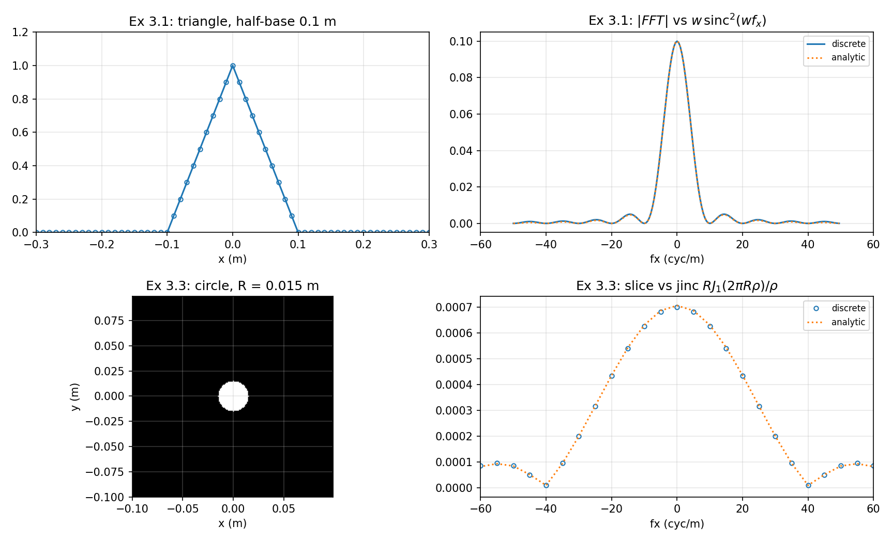
坑与陷阱#
rect 的'奇数样本'约定：偶数宽多给一个样本，面积会虚高
书内 rect 编码是 abs(x)<=1/2（边界取 1），全宽总是奇数个样本；请求偶数样本宽会多返回一个。后果可量化：3.7 节 \(w_x=0.1\)、\(w_y=0.05\)（都是偶数间隔数）使离散面积变成 \(21\times11\,\mathrm{d}x^2 = 0.0231\)，比真实面积 0.020 高 15%——书图 3.11(b) 的峰就是它。要面积准：选奇数样本宽（如 0.055），或改用表 1.2 半值约定并接受边界斜坡。
MATLAB 与 numpy 的'默认乘法'方向相反
MATLAB：* 是矩阵乘、.* 才是逐元素——忘点号通常不报错但结果离谱，是书 3.8 节点名的头号错误。numpy：* 天然逐元素、@ 才是矩阵乘。两边互译代码时，这对符号必须整体翻转；^ vs ** 同理。
fftshift / ifftshift 配对：书用 fftshift 预移位是钻了偶数 M 的空子
书 3.3/3.7 节预移位都写 fftshift——偶数 \(M\) 下与 ifftshift 等价，不出错；奇数 \(M\)（或零填充到 \(N_1+N_2-1\)）时两者不同，配对用错就错位一个样本。稳妥口诀不变：ifftshift → fft → fftshift。
定标因子跟维度与运算类型走：dx、dx²、卷积一次 dx
一维 FFT 乘 \(\Delta x\)；二维乘 \(\Delta x^2\)；FFT 卷积（ifft 后）只乘一次 \(\Delta x\)。忘乘则频谱整体小 \(M\) 或 \(M^2\) 倍——用中心纵坐标定理（频谱峰值 = 空域离散面积）当场验尸。注意"离散面积"按书约定含边界样本（上一条）。
一维 fft 用在二维阵列上会得到'条纹'
二维必须 fft2/ifft2（numpy fft2）。一维 fft 只沿一个方向变换，结果"看起来像重复的一维谱"（书 3.8 节原话：striped）。反过来 numpy 的 np.fft.fft 沿最后一轴变换——想沿特定轴变换时要显式传 axis 参数。
行列索引 vs 笛卡尔坐标：g(M/2+1,:) 是 y=0 的行
MATLAB (i,j) =（行, 列），行对应 \(y\)、列对应 \(x\)。取 \(y=0\) 的横向剖面写 g(M/2+1,:)（Python g[M//2, :]）；meshgrid 的 X 行是 \(x\) 副本、Y 列是 \(y\) 副本。Python 里一旦写了 indexing='ij' 两维互换——圆对称函数看不出来，非对称问题直接错。
图像显示默认 y 向下：axis xy / origin='lower'
常规图像文件第 1 行在顶部，imagesc/imshow 因此默认 \(y\) 轴向下增——建模的"上方"会画在下面。MATLAB 加 axis xy，Python 用 origin='lower'。
相位图的 ±π 跳变是显示伪影，不是物理
angle 输出在 \(-\pi\) 到 \(\pi\) 之间卷绕，±π 是同一个相位；图上陡峭的跳变多半来自机器精度的微小数值差。真正要看的是 0 ↔ ±π 之间的跳变位置（实偶函数它落在幅度零点上，相位 π ≡ 给幅度加负号）。
速览#
- 函数 M 文件：文件名 = 函数名；脚本 vs 函数两种；
%注释、分号抑回显。 - 书的 rect 编码
abs(x)<=1/2：边界取 1（与表 1.2 的半值约定不同）；全宽总是奇数个样本，偶数请求多给一个。 - 建网格四件套：\(w, L, M, \mathrm{d}x = L/M\)；坐标 \(x = -L/2:\Delta x:L/2-\Delta x\)（式 2.21）。
- FFT 前移位：居中（零坐标在 \(M/2+1\)）→
fftshift→ index 1；奇数 \(M\) 用ifftshift配对；不移位 = 凭空多线性相位。 - 一维 FFT 乘 \(\Delta x\)、二维乘 \(\Delta x^2\)；频率坐标 \(-1/(2\Delta x):1/L:1/(2\Delta x)-1/L\)（式 2.22）。
- 读 FFT：
abs+angle两张图；相位只有 0 与 ±π（±π 同值），0→π 跳变在幅度零点处（本例约每 18 样本 \(= L/(2w)\)）；样本不踩 sinc 零点 → 谷底不为零。 - FFT 边缘略高于解析谱 = 周期延拓混叠（2.5 节）。
- FFT 卷积：
fft → .* → ifft × dx → fftshift；两函数都居中时不必预移位（相位账模 \(L\) 不可见），但只移位一个就整体错位 \(L/2\)；支撑判据 \(D_1+D_2 < L\)。 - 二维：
meshgrid（X 行 = x 副本）、imagesc + axis xy、切片g(M/2+1,:)、fft2 × dx²、surf显示；一维fft用在二维阵列 → 条纹。 - 本章 Python 复用公共模块
python/fourier/common/base.py（rect/sinc/tri/circle/jinc、coords、ft1/ft2_centered）；书编码语义的rect_book在 ch3 脚本内定义。
术语速查#
| 英文 | 中文 | 一句话 |
|---|---|---|
| M-file | M 文件 | 扩展名 .m 的 MATLAB 代码文件；脚本或函数 |
| script / function | 脚本 / 函数 | 顺序执行的代码行 / 可调用并返回结果的任务单元 |
| vectorized logical test | 向量化逻辑测试 | abs(x)<=1/2 对每个元素比较，返回 0/1 数组 |
| Current Directory | 当前文件夹 | 工作文件存放处，同文件夹函数互相可见 |
| element-wise operation | 逐元素运算 | MATLAB 的 .* .^；numpy 的 * **（默认！） |
| fftshift | 移位命令 | 换半边/象限对调；居中 ↔ 移位排列 |
| magnitude / phase | 幅度 / 相位 | 复数样本的两份信息；abs / angle |
| slice (profile) | 切片 | 二维结果的一维剖面，如 g(M/2+1,:) |
| Dirichlet kernel | Dirichlet 核 | 有限样本截断的离散精确谱 \(\sin(N\pi f\Delta x)/\sin(\pi f\Delta x)\) |
| meshgrid | 网格生成 | X 行 = x 副本、Y 列 = y 副本；'xy' 约定 |
| imagesc / colormap | 图像显示 / 伪彩色 | 数组缩放到全显示范围 / 灰度或彩色映射 |
| axis xy / square | 轴方向 / 方形边框 | y 自下而上 / 图窗边框正方形 |
| surf | 曲面图 | 二维阵列的 3D 展示（Python plot_surface） |
| nthroot(g,n) | n 次方根 | 对比度拉伸技巧，看暗部特征 |